Marcas atendidas ao longo da trajetória
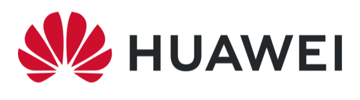
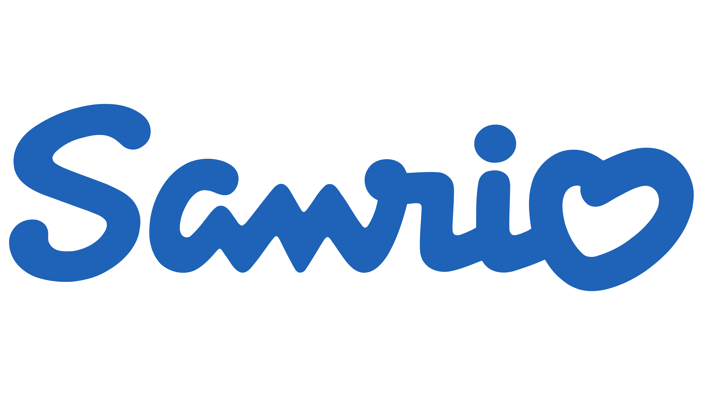
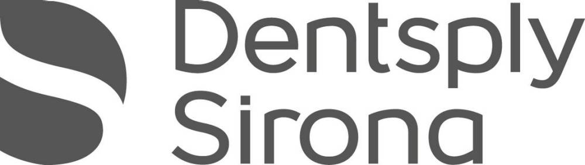
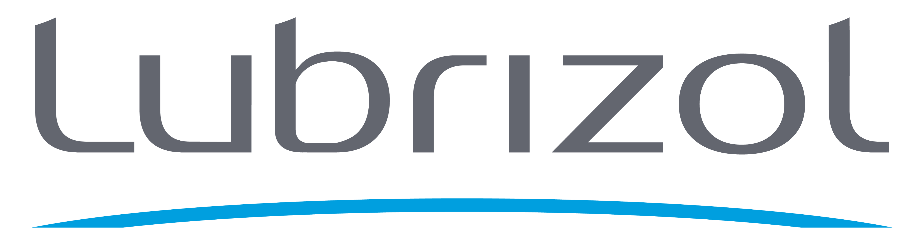
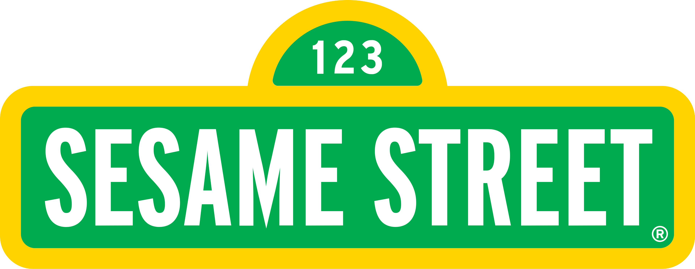
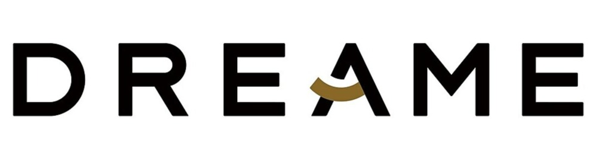
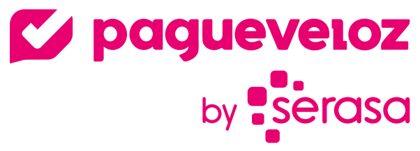
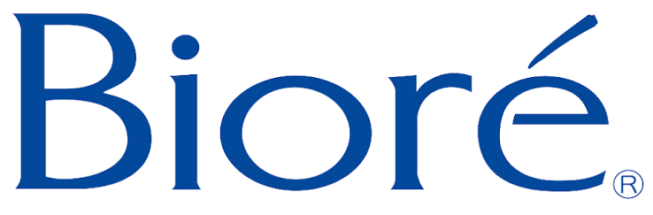
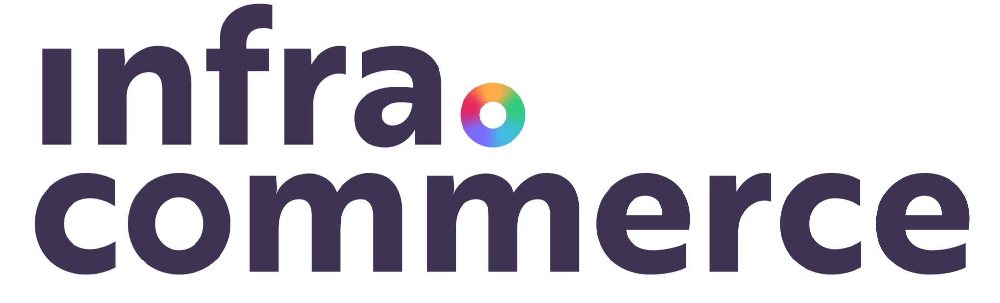
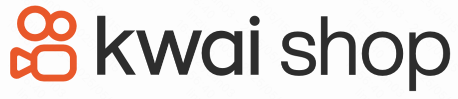
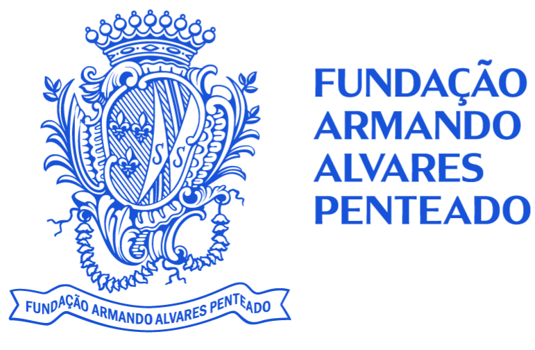
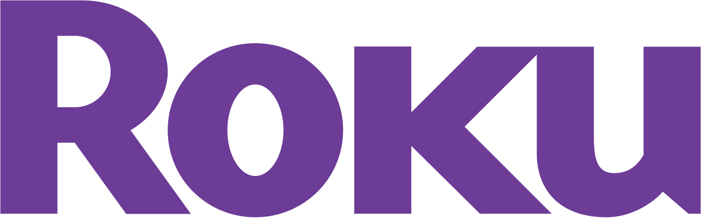
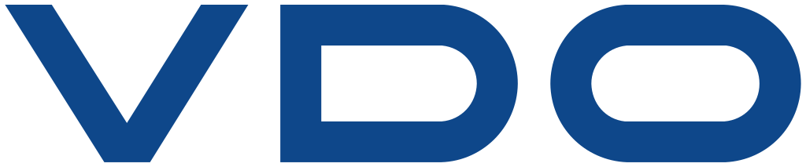

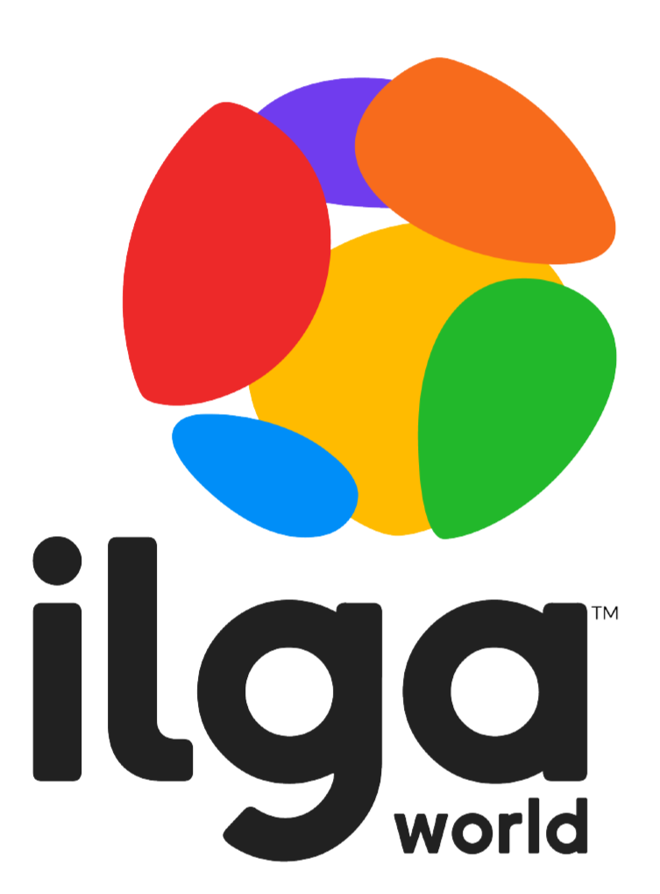
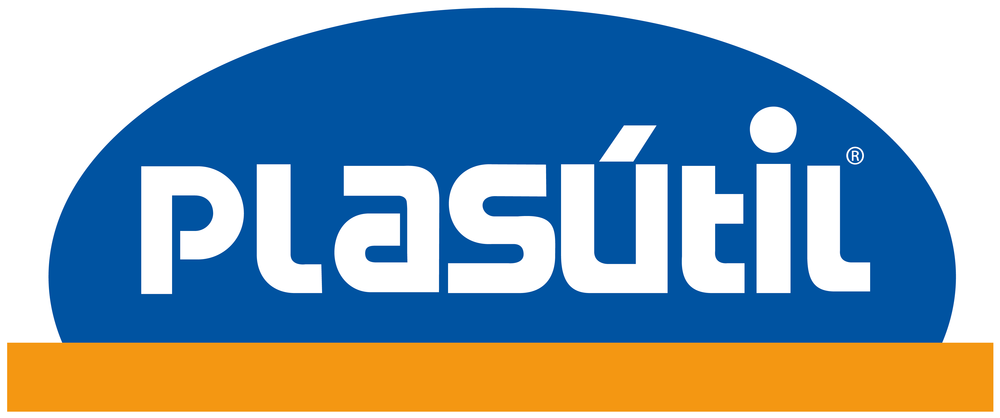
Direção criativa e design estratégico para marcas e operações — sistemas pensados pra durar além da entrega.
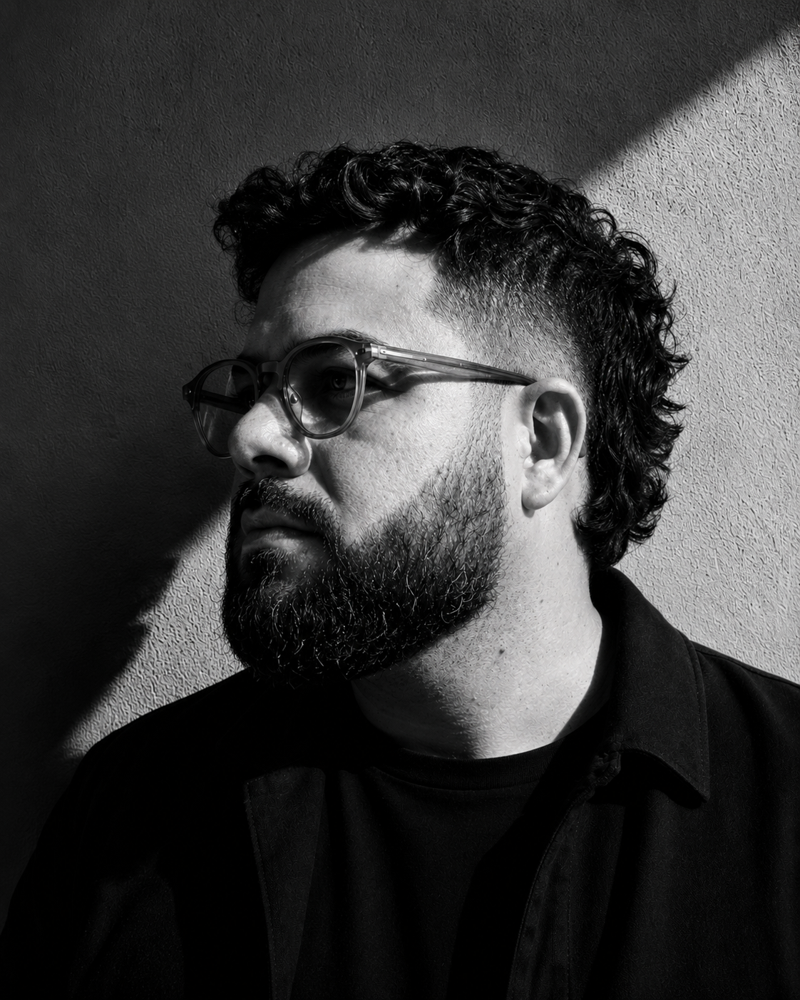















"Trabalhei com o Andrê por mais de sete anos e, em cada projeto, sabia que podia contar não apenas com um resultado de altíssimo nível, mas também com um parceiro capaz de trazer uma visão estratégica e enriquecer cada entrega. Em projetos especialmente desafiadores, como algumas concorrências que desenvolvemos juntos ROKU e ILGA World, pude acompanhar de perto sua capacidade de liderar equipes, resolver problemas e, ao mesmo tempo, manter um olhar minucioso e extremamente criativo como Design Lead."
Co-Founder & Strategy Director — Ficus
"Ter o Andrê no time como diretor de arte sempre trouxe a certeza de que qualquer problema viraria uma solução funcional e com um design impecável. Além de fazer peças com mixed media e colagens maravilhosas, guiadas por um excelente senso estético carregado de princípios de design, ele é aquele parceiro que oxigena o projeto. Seu olhar afiado vai desde o conceito até a arte final, o que fazia todo o nosso processo ser muito mais fácil, especialmente em telas pra Motion."
Motion Designer 2D/3D — OK Social
15 anos de experiência liderando equipes e projetos para marcas nacionais e globais.
Mais sobre →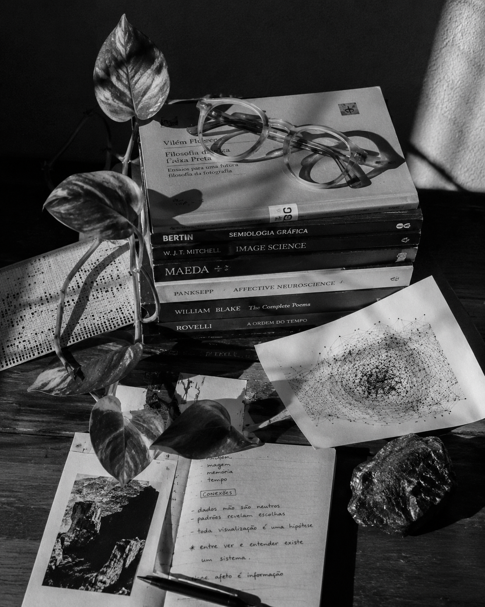